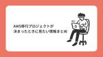
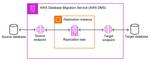
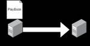
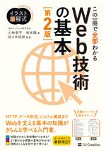
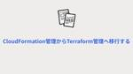
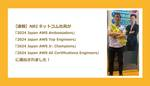
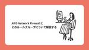

Technology - NRIネットコムBlog
https://tech.nri-net.com/archive/category/Technology
NRIネットコム社員が業務で利用している幅広い技術やナレッジについて紐解くブログメディアです。
フィード
AWS Summitにネットコムがブース出展しました！
Technology - NRIネットコムBlog
こんにちは小山です。 先日 AWS Summit が開催されたので、ネットコムのブースと会場の雰囲気をお届けしたいと思います。 AWS Summit 基本情報 開催場所 開催日時 出展企業数 会場に入る前の大行列 会場の様子 ネットコムブースの様子 出展内容 佐々木登壇 筆者所感 AWS Summit 基本情報 まずざっくり AWS Summit の情報を記載します、会場の様子を知りたい方は上の目次から飛んでいただけると幸いです。 開催場所 幕張メッセ & オンライン配信 開催日時 2024 年 6 月 20 日（木） 10:00 - 18:30 21 日（金）10:00 - 17:00 オン…
15時間前
AWSリソースの差分比較ツールを自作したのでご覧あれ 39
39
Technology - NRIネットコムBlog
本記事は マイグレーションウィーク 6日目の記事です。💻🖥 5日目 ▶▶ 本記事 ▶▶ 🖥💻 初めに ITの変遷と思想の変遷 新たな問題 作ってみた DARS 何と呼ぶ？？？ コードはこちら 機能紹介の前に 3つの機能 diff conf html バッチ編 課題 ユースケース 最後に 得られた副産物 人間は間違える 初めに こんにちは、上田です。 2024年5月にネットコムに入社したばかりで社内ネタを持ち合わせていないので、作ってみたシリーズに乗っかってみました。 また、今回のテーマはクラウドマイグレーションということなので、オンプレミスからクラウドへITリソースを移行するに伴って人間の考え…
2日前
データ分析基盤を作ってみよう 設計編 ～NRIネットコム TECH AND DESIGN STUDY #37～
Technology - NRIネットコムBlog
こんにちは、ブログ運営担当の小野です。 7/18（木）12:00~12:30 当社主催の勉強会「NRIネットコム TECH & DESIGN STUDY #37」が開催されます!! NRIネットコム TECH AND DESIGN STUDY #37 「データは新たな原油」と例えられる現代において、そのデータを総合的に分析し、価値ある情報へと昇華させる基盤の構築は、企業にとって不可欠な戦略の一つです。 今回のウェビナー、「データ分析基盤を作ってみよう 設計編」では、AWSを用いたデータ分析基盤の設計の考え方を紹介します。 データレイクやETL、DWHといった要素の概要と、対応するAWSのサービ…
4日前

AWS移行プロジェクトが決まったときに見たい情報まとめ 2
Technology - NRIネットコムBlog
本記事は マイグレーションウィーク 5日目の記事です。 💻🖥 4日目 ▶▶ 本記事 ▶▶ 6日目 🖥💻 はじめに AWS移行の考え方を知る AWSの移行用サービスを知る AWSブログで知る AWS Black Beltで知る AWS料金を知る おわりに はじめに こんにちは、NRIネットコムの高梨です。初のブログ投稿となります。 今回はマイグレーションWeekということで、クラウド移行（特にAWSへの移行）についてのお話です。 移行を考えるにあたっての大前提として、大変ざっくりした記載になってしまいますが、以下2つがポイントになると考えています。 移行元（オンプレミス）環境を知る 移行先（クラ…
5日前

【データベース移行】AWS Database Migration Service（AWS DMS）入門
Technology - NRIネットコムBlog
本記事は マイグレーションウィーク 4日目の記事です。 💻🖥 3日目 ▶▶ 本記事 ▶▶ 5日目 🖥💻 はじめに AWS Database Migration Serviceとは AWS DMSの特徴 AWS DMSを構成するコンポーネント 1. エンドポイント 2. レプリケーションインスタンス 3. データ移行タスク AWS DMSのデータ移行方式 AWS DMSでデータ移行をやってみる 検証内容 1. データベース環境の準備 1.1 移行元（ソース）環境の作成 1.2 移行先（ターゲット）環境の作成 1.3 セキュリティグループの設定 2. AWS DMSの準備 2.1 レプリケーション…
6日前

クラウド移行案件を担当してAnsibleを覚えた話 33
Technology - NRIネットコムBlog
本記事は マイグレーションウィーク 3日目の記事です。 💻🖥 2日目 ▶▶ 本記事 ▶▶ 4日目 🖥💻 はじめに こんにちは。入社2年目の牛塚です。部署に配属されてからもうすぐ一年になりますが、さまざまな経験をし多くのことを学ぶことが出来ました。私は普段オンプレサーバーからクラウド環境へ移行する案件を担当しており、その中でAnsibleをはじめて使いました。今回はAnsibleについて簡単な説明と、実際に案件で使ってみて感じたことをまとめてみました。 Ansibleとは AnsibleとはサーバーをはじめとしたIT機器の構築作業を自動化できるIaCサービスです。サーバーのセットアップをする際に…
7日前
【10周年前祝い】歴史・年表でみるAWSサービス(AWS Lambda編) －機能一覧・概要・アップデートのまとめ・入門－
Technology - NRIネットコムBlog
小西秀和です。 「歴史・年表でみるAWS全サービス一覧 －アナウンス日、General Availability(GA)、AWSサービス概要のまとめ－」から始まった、AWSサービスを歴史・年表から機能を洗い出してまとめるシリーズの第8弾です(過去、Amazon S3、AWS Systems Manager、Amazon Route 53、Amazon EventBridge、AWS KMS、Amazon SQSについて書きました)。 今回は2014年11月にアナウンスされたサーバーレスでフルマネージドなコード実行サービスを提供するAWS Lambdaについて歴史年表を作成してみました。 今年2…
7日前
設計書がないJenkinsを別サーバへ移行する
Technology - NRIネットコムBlog
本記事は マイグレーションウィーク 2日目の記事です。 💻🖥 1日目 ▶▶ 本記事 ▶▶ 3日目 🖥💻 はじめに 移行した背景 事前調査 現行構成の把握 現行設定の確認 OS周り サービス周り Jenkinsデータの移行方法を調査 移行先OSの調査 CentOS 7とAmazon Linux 2023の比較 方針 データ移行 切り替え EC2へのログイン 設定を反映 EC2（Amazon Linux 2023）を作成 OSの設定を行う パッケージをインストール データ移行 Jenkinsのデータ移行 動作確認 CentOS 7からAmazon Linux 2023へ切り替える 後片付け おわり…
8日前
JJUG CCC 2024 Spring参加レポ～CfP採択の秘訣～
Technology - NRIネットコムBlog
はじめに こんにちは、髙橋です。 2024/6/16(日)に開催されたJJUG CCC 2024 Springで「Virtual Threadsで実現する性能改善」という題目で登壇しました。 準備したこと・当日の感想・イベント前後での出来事など、あれこれ振り返ろうと思います。 頂いたTシャツとスピーカー名札 JJUGとは 日本Javaユーザーグループ（Japan Java User Group/JJUG）のことです。 10000人以上のJavaエンジニアが参加する日本最大のJavaコミュニティです。 毎年春と秋にCCCという1日カンファレンスを開催しています。 参考：https://ccc20…
8日前

【改訂しました】「この一冊で全部わかるWeb技術の基本」が第2版となりました。 19
Technology - NRIネットコムBlog
どうも。小林です。 なんとなく気になって社内の小林さんの数を数えたら7人いました。 ネットコムの小林シェアは1%以上あるようです。 さっそく本題です。 こちらの書籍、みなさまご存知でしょうか？ 「イラスト図解式 この一冊で全部わかるWeb技術の基本」は、2017年3月16日に発売され、発行部数は44,000部を超えています。 電子版も発行されているので、発行部数以上に多くの方に読んでいただけていることになります。 私が著者として初めて携わった書籍です。 安定して売れ続けておりますが、古くなってきた情報もあるということで、このたび改訂版を出すことになりました。 イラスト図解式 この一冊で全部わか…
8日前
AWSマンスリーアップデートピックアップ！！ 2024年6月分 ～NRIネットコム TECH AND DESIGN STUDY #36～
Technology - NRIネットコムBlog
こんにちは、ブログ運営担当の小野です。 7/11（木）12:00~12:30 当社主催の勉強会「NRIネットコム TECH & DESIGN STUDY #36」が開催されます!! 今回のTECH & DESIGN STUDYのテーマは、日々たくさんのアップデートが発表されているAWSについて、前月分のアップデートより当社の腕利きエンジニア目線で皆さんのお役に立ちそうな情報を厳選ピックアップしてお話させていただきます！ 是非ご参加ください！ 登壇者 西内渓太 2022年NRIネットコム入社のクラウドエンジニア 執筆したブログ https://tech.nri-net.com/archive/a…
8日前

CloudFormation管理からTerraform管理へ移行する 8
Technology - NRIネットコムBlog
本記事は マイグレーションウィーク 1日目の記事です。 💻🖥 告知記事 ▶▶ 本記事 ▶▶ 2日目 🖥💻 こんにちは、後藤です。 マイグレーションWeekということで普段、業務で触れている技術であるIaCツールの移行について書きたいと思います。 有名なIaCツールにはTerraformやCloudFormation、Pulumiなどがあり、それぞれに一長一短の特徴があります。使っていくうちに「やっぱり変えたい」と思うこともあるかもしれません。例えば「現状AWSのみ管理しているがGCPも扱うことになったので管理方法を合わせたい」といったシチュエーションです。 そういったシチュエーションのために、…
9日前

【速報】NRIネットコム社員が「2024 Japan AWS Ambassadors」「2024 Japan AWS Top Engineers」「2024 Japan AWS Jr. Champions」「2024 Japan AWS All Certifications Engineers」に選出されました！
Technology - NRIネットコムBlog
こんにちは、ブログ運営担当の栗田です。 本日6/20に発表されました「2024 Japan AWS Ambassadors」「2024 Japan AWS Top Engineers」「2024 Japan AWS Jr. Champions」「2024 Japan AWS All Certifications Engineers」に、NRIネットコム社員が選出・表彰されました！！ 本ブログでは速報として、選出・表彰されたメンバーをご紹介いたします。（メンバーの記載は五十音順となります） 2024 Japan AWS Ambassadors NRIネットコムからは、佐々木拓郎・志水友輔・丹勇人…
12日前
ブログイベント「マイグレーションウィーク」開催します！ 1
Technology - NRIネットコムBlog
こんにちは、ブログ運営担当の小野です。 今月のブログイベントのお知らせです！ マイグレーションウィーク マイグレーションウィーク オンプレミスのシステムからクラウドへのリフトアップをはじめとするマイグレーションのご相談をいただくことが最近増えています。そこで今月のブログイベントは、当社メンバーが培ったマイグレーションのナレッジを公開していく特集を開催します！ 6/24~7/1（土日除く）の期間で合計6本の記事がアップされる予定です。 記事掲載日と記事内容 更新され次第、こちらの記事にもリンクを掲載します。ぜひ、ご期待ください！ 6/24（月）：後藤涼太 tech.nri-net.com 6/2…
12日前
【現地写真あり】NRIネットコム、AWS Summitにブース出展！& セッション登壇のお知らせ
Technology - NRIネットコムBlog
こんにちは、ブログ運営担当の栗田です。 今年もこの季節がやってきました、 AWS Summit Tokyo 2024!!! シルバースポンサーとして出展しています NRIネットコムは、シルバースポンサーとしてAWS Summitにブースを出展しています。 ブース出展 NRIネットコムのブースでは、お客様のクラウド活用をサポートした事例に加え、AWSを学ぶためのヒントも展示しております。AWSプロフェッショナルのエンジニアがブースでお待ちしております。 ブースID：H5-S094 パートナーセッション登壇 NRIネットコム クラウドテクニカルセンター センター長 佐々木拓郎が、パートナーセッショ…
12日前

AWS Network Firewallとそのルールグループについて解説する
Technology - NRIネットコムBlog
はじめに ドーモ、はじめまして。ウキタです。先日、AWS Network Firewallを触る機会がありました。そんなに調べなくてもある程度の設定はできるだろうとタカをくくっていたら、ステートレスルール/ステートフルルールのどちらを設定すれば良いのか、何のアクションを選べばいいのか、ルーティング設定したはずなのに通信できないなど...色々と苦戦しました。ネットワークの知識は少しあるので、自分なりに補足を入れながらAWS Network Firewallとそのルールについて解説していきます。ルーティングについては、別の記事で説明する予定です。 はじめに このページで説明すること AWS Net…
14日前

AWS Security Hubでマルチアカウント管理／HTTPヘッダ観点で見るCloudFront～NRIネットコム TECH AND DESIGN STUDY #35～
Technology - NRIネットコムBlog
こんにちは、ブログ運営担当の小野です。 6/27（木）19:00~20:00 当社主催の勉強会「NRIネットコム TECH & DESIGN STUDY #35」が開催されます!! 今回のTECH & DESIGN STUDYは、当社クラウドエンジニアから、AWS Security Hubを活用した効率的でセキュアなマルチアカウント管理と、HTTP ヘッダ観点で見る CloudFrontについてお話します。 【1本目】 AWS Security Hubを活用した効率的でセキュアなマルチアカウント管理 AWSアカウント内のセキュリティとコンプライアンスの状況を確認していますか？ AWS Secu…
21日前
AWS IAM のアンチパターン/AWSが考える最低権限実現へのアプローチ概略 ～NRIネットコム TECH AND DESIGN STUDY #34～
Technology - NRIネットコムBlog
こんにちは、ブログ運営担当の小野です。 6/18(火) 12:00～12:30 当社主催の勉強会「NRIネットコム TECH & DESIGN STUDY #34」が開催されます!! 今回のTECH & DESIGN STUDYは、もうすぐAWS Summit Japan 2024！改めて考える AWS Identity and Access Management（AWS IAM）のアンチパターン/AWSが考える最低権限実現へのアプローチ概略 ～AWS IAM Identity Centerの権限設計も考えてみる～ について、お話します。 AWS IAM のアンチパターン/AWSが考える最低権…
1ヶ月前
解析機能を使ってプルリクエストの振り返りをしよう
Technology - NRIネットコムBlog
本記事は 【プルリクウィーク】 6日目の記事です。 💻 5日目 ▶▶ 本記事 📚 こんにちは、システムエンジニアの檀上です。 普段は顧客の社内システムの要件調整・基本設計などを担当しています。 さて、皆様は普段の業務の中で、プルリクエストを提出したり、プルリクエストをレビューしたりといったタスクを日々こなされていると思います。 ところで、あなたの所属するプロジェクトでのプルリクエストの扱いについて、振り返ってみたことはありますか？ 例えば、レビューはどのタイミングで実施しますか？誰が一番多くプルリクエストを提出していますか？その状態は、健全でしょうか？ この記事では、GitベースのWebプラッ…
1ヶ月前
SECIモデルを活用したAWSでのプルリクエスト権限の委任と品質管理
Technology - NRIネットコムBlog
本記事は 【プルリクウィーク】 5日目の記事です。 💻 4日目 ▶▶ 本記事 ▶▶ 6日目 📚 はじめに こんにちは！最近また子どもたちがバナナハマり期に入っていて、バナナのスケーリングが間に合っていない志水です。前回のハマり期は一気にスケーリングさせたタイミングで食べなくなり、一人でコツコツ食べる羽目になったので、今回のバナナスケーリング戦略(BSS)は慎重にいきたいと思います。 現在、私たちのチームは、17個のプロジェクトを担当しており、15名のチームです。その中に開発チーム2つと運用チーム1つがあります。それぞれのチームにはリーダーがいて、3-6名のメンバーが所属しています。 チームが多…
1ヶ月前
プルリクエストを見る時、出す時に重要なマインドセット
Technology - NRIネットコムBlog
本記事は 【プルリクウィーク】 4日目の記事です。 💻 3日目 ▶▶ 本記事 ▶▶ 5日目 📚 こんにちは越川です。 GitHubはアプリケーションの開発に携わる人がメインで使う、という印象が強かったのですが現在、クラウドエンジニアの私もほぼ毎日GitHubを触っています。 私の場合、業務上、IaCを使うのでプログラミングをする機会が多く、その分プルリクエスト（以降PR）を見ることも出すことも多くあります。今回は自分自身がPRを見る時、または出す時にどんなことを意識しているのかを書いてみようと思います。 ※PRとは新規開発や改修などの内容を関係者に通知する仕組みです。このPRをトリガーに関係者…
1ヶ月前
DifyとSlackを連携したSlack Botをつくってみた
Technology - NRIネットコムBlog
こんにちは堤です。 最近よくDifyを使って遊んでいます。使っていくなかで他のチャットツールと連携させる方法を知りたいと思ったので、今回はSlackと連携する方法を備忘がてらまとめてみました。 Difyとは Slack Botの作り方 Slack Botの準備 権限の付与 Lambdaの関数URLの作成 Event Subscriptionsの設定 Difyのアプリ作成 Lambda関数の作成 動作確認 Bot作成例 まとめ Difyとは Difyは、オープンソースのLLMアプリケーション開発ツールで、ドラッグアンドドロップの簡単な操作で複雑なワークフローのアプリケーションを作ることができるの…
1ヶ月前
プルリクエストレビューをスムーズに進めるための実践的アプローチ
Technology - NRIネットコムBlog
本記事は 【プルリクウィーク】 3日目の記事です。 💻 2日目 ▶▶ 本記事 ▶▶ 4日目 📚 はじめに チーム構成と使用ツール レビューに入る前に考えるべきプラットフォームエンジニアリング レビュアー側が意識したいこと レビューイ側が意識したいこと まとめ はじめに こんにちは。髙橋です。 プルリクウィークというイベントに執筆依頼を頂いたので、私が普段業務でプルリクエストをレビューする/レビューされるときに意識していることを書いてみようと思います。 あくまで私が意識していることという意味合いであり、全員こうすべき！と押し付ける意図はありません！ チーム構成と使用ツール まず前提の認識を揃える…
1ヶ月前
terraform planコマンドを見やすく効率的にする2つのオプション
Technology - NRIネットコムBlog
こんにちは、後藤です。 みなさま、Terraformは使っていますでしょうか。私はようやく慣れてきたところです。 今回はTerraformの中でもterraform planコマンドについて話します。 はじめに Terraformを使ってリソースを構築する際の一般的な流れは、terraform planで実際に設定されるリソースを事前確認し、terraform applyで実際に適用する、になるかと思います。この時、terraform plan > plan.txtのように証跡用や、表示結果を見やすくするためにファイル出力をすることがあると思います。しかし、このコマンドで出力されたファイルは決…
1ヶ月前
【20周年前祝い】歴史・年表でみるAWSサービス(Amazon Simple Queue Service編) －機能一覧・概要・アップデートのまとめ・Amazon SQS入門－
Technology - NRIネットコムBlog
小西秀和です。 「歴史・年表でみるAWS全サービス一覧 －アナウンス日、General Availability(GA)、AWSサービス概要のまとめ－」から始まった、AWSサービスを歴史・年表から機能を洗い出してまとめるシリーズの第7弾です(過去、Amazon S3、AWS Systems Manager、Amazon Route 53、Amazon EventBridge、AWS KMSについて書きました)。 今回は2004年11月にAWSインフラストラクチャサービスとして最初にアナウンスされ、フルマネージド型メッセージキューイングサービスを提供するAmazon Simple Queue S…
1ヶ月前
とあるインフラ屋のプルリクエストレビュー奮闘記
Technology - NRIネットコムBlog
本記事は 【プルリクウィーク】 2日目の記事です。 💻 1日目 ▶▶ 本記事 ▶▶ 3日目 📚 はじめに Git と インフラ屋 と IaC そもそもインフラ屋が管理するコードとは？ IaC インフラ関連の設定ファイル CI/CD周りの設定ファイル PRレビューで難しいと思うこと 何を持ってOKとするか そもそも検証が難しい 網羅性が判断つかない PRレビューで意識していること 静的チェックの導入 コメントには意向を示す略語を付ける コメントがFixすればリアクションしてクローズする 対面レビューの時間を設ける リリースとの親和性が高い さいごに はじめに こんにちは、加藤です。 普段、私はイ…
1ヶ月前
効率的・効果的なプルリクエストのための取り組み
Technology - NRIネットコムBlog
本記事は 【プルリクウィーク】 1日目の記事です。 💻 告知記事 ▶▶ 本記事 ▶▶ 2日目 📚 こんにちは、フロントエンド領域を中心に活動しているシステムエンジニアの山田です。 昨今のシステム開発においてはGitを使用することがほとんどかと思います。 また、開発プロセスとしてプルリクエスト（以下、PR）を利用するチームも多いのではないでしょうか？ そこで、この記事では実際に私が行なってきたPRを効率的にレビューするための取り組みと、PRを利用する際に意識した取り組みについてご紹介しようと思います。 ※ここではTypeScriptを利用した開発経験をもとに記載します。 システム的な取り組み フ…
1ヶ月前
ブログイベント「プルリクウィーク」始まります！
Technology - NRIネットコムBlog
こんにちは、ブログ運営担当の小野です。 今月のブログイベントについてお知らせします！ プルリクウィーク 5月のブログイベントは「プルリクウィーク」です！ NRIネットコムに所属するメンバーが「プルリクエスト」に関する記事を執筆します。 5/27~6/3の期間で合計6本の記事がアップされる予定です。 記事掲載日と記事内容 更新され次第、こちらの記事にもリンクを掲載します。ぜひ、ご期待ください！ 5/27(月)：山田遼 tech.nri-net.com 5/28(火)：加藤俊稀 tech.nri-net.com 5/29(水)：高橋透 tech.nri-net.com 5/30(木)：越川徹也 t…
1ヶ月前
マルチアカウント管理におけるAmazon GuardDutyの活用方法
Technology - NRIネットコムBlog
はじめに Amazon GuardDutyはどんなサービス？ S3 Protection EKS Protection Malware Protection RDS Protection Lambda Protection Runtime Monitoring Runtime Monitoring 自動エージェント設定 Runtime Monitoring 手動エージェント設定 信頼されているIPリスト/脅威IPリスト マルチアカウント管理におけるAmazon GuardDutyの活用 Amazon GuardDutyを活用したマルチアカウント設計・運用のポイント ①全てのAWSアカウント、全…
1ヶ月前
AWSマンスリーアップデートピックアップ！！ 2024年5月分 ～NRIネットコム TECH AND DESIGN STUDY #33～
Technology - NRIネットコムBlog
こんにちは、ブログ運営担当の小野です。 6/11（火）12:00~12:30 当社主催の勉強会「NRIネットコム TECH & DESIGN STUDY #33」が開催されます!! 今回のTECH & DESIGN STUDYのテーマは、日々たくさんのアップデートが発表されているAWSについて、前月分のアップデートより当社の腕利きエンジニア目線で皆さんのお役に立ちそうな情報を厳選ピックアップしてお話させていただきます！ 是非ご参加ください！ 登壇者 西内渓太 2022年NRIネットコム入社のクラウドエンジニア 執筆したブログ https://tech.nri-net.com/archive/a…
1ヶ月前